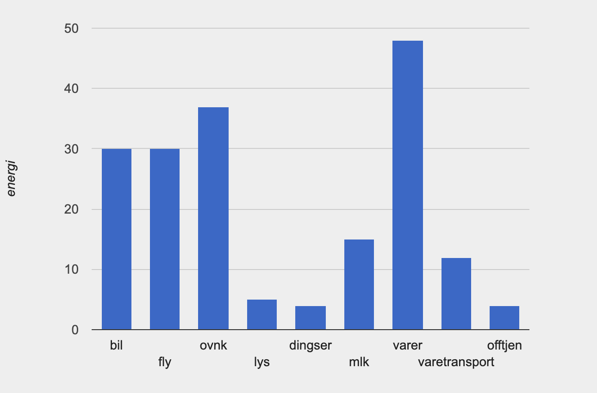

Om meg:
Hei! Jeg heter Furkan. Jeg kom til Norge for 3 år siden og bestemte meg for å studere IT. Jeg er interessert i fotball og heier på Besiktas som er den største fotballklubben i hjemlandet mitt. Jeg synes det er artig å bo i Kristiansand. Det eneste problemet er at det regner mye og jeg hater regn.
Figuren jeg lagde i Pyret:

Figuren jeg har gjenskapt i Canvas API:
Figuren jeg har gjenskapt i SVG API:
Forbruk

Siden jeg ikke har bil, kjører jeg ikke bil. Derfor er mitt forbruk ikke så høyt.
Jeg flyr mange ganger i året for å reise og derfor kan mitt forbruk være høyt.
Jeg trenger å varme opp hjemme derfor kan forbruket mitt være høyt. Jeg er ikke glad i å slå på lys hjemme og tror ikke forbruket mitt er så høyt.
Jeg bruker mange dingser som for eksempel mobil telefon, lader, hodetelefon og hårføner. Jeg tror ikke forbruket mitt så høyt siden de ikke bruker så mye energi.
Jeg er glad i å spise kjøtt og tenker det kan være relevant. Jeg tror forbruket mitt er høyt på det.
Jeg bruker masse varer i livet. Det kan være høyeste forbruket mitt.
Jeg bestiller noe ganske sjeldent. Derfor tenker jeg at forbruket mitt er så lavt.
Jeg bruker offentlige tjenester sjeldent, men går på universitet hverdag. Universitet kan påvirke forbruket mitt.